Object 1
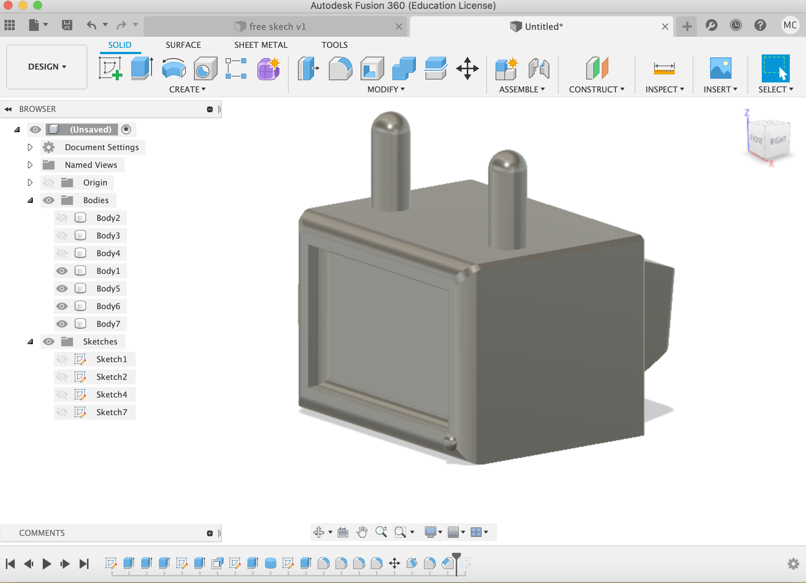
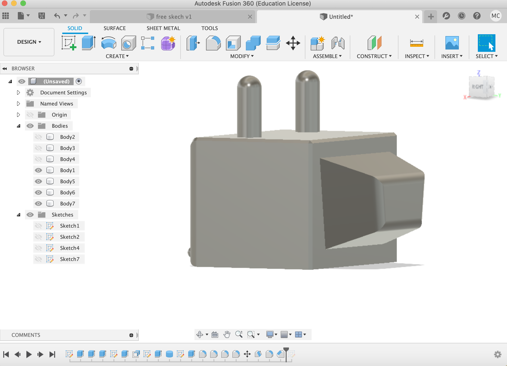
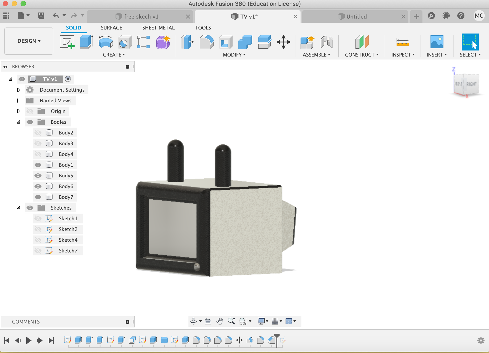

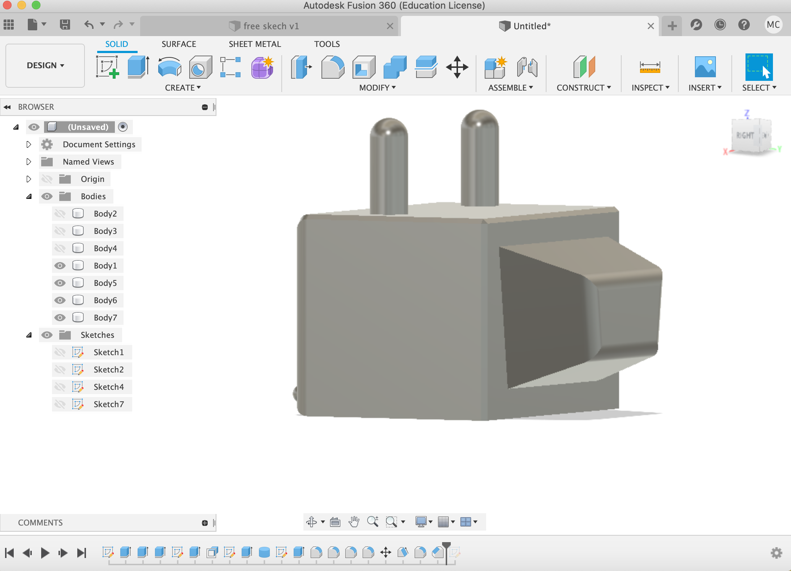
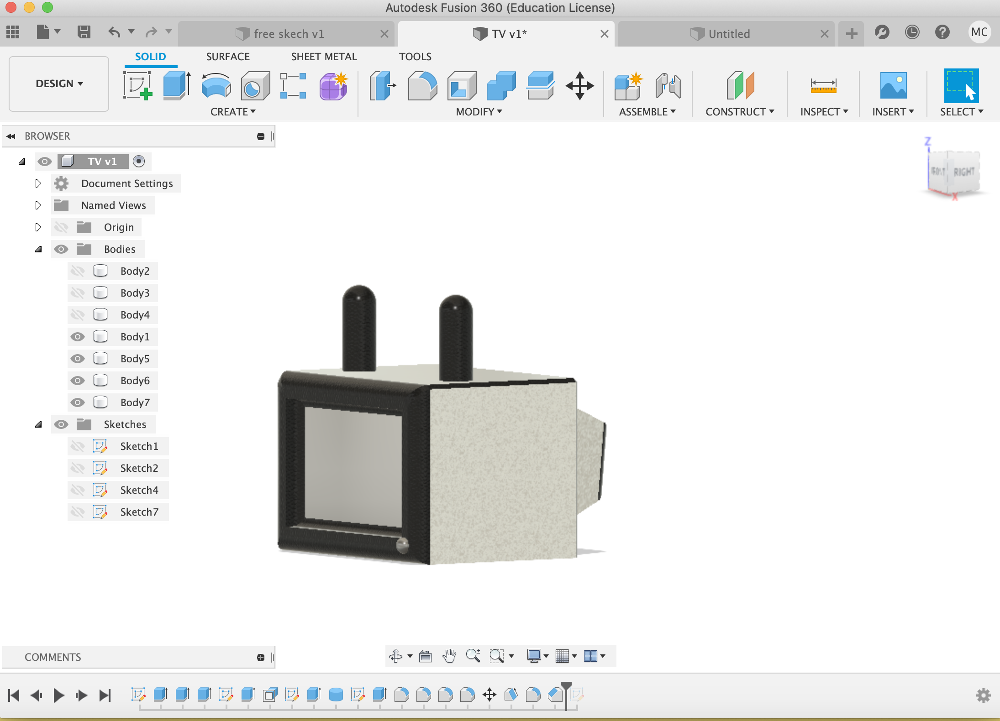
object2
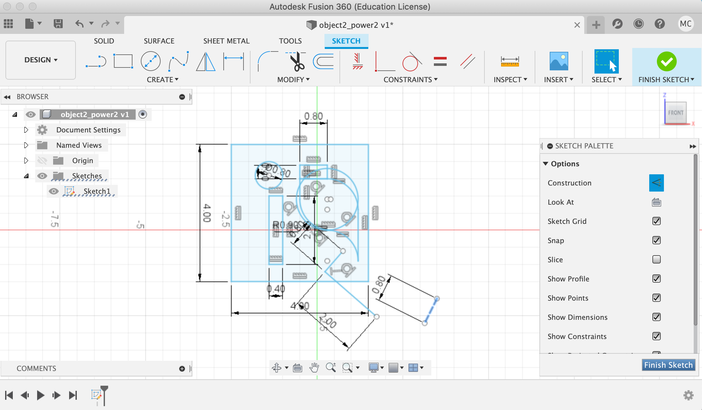
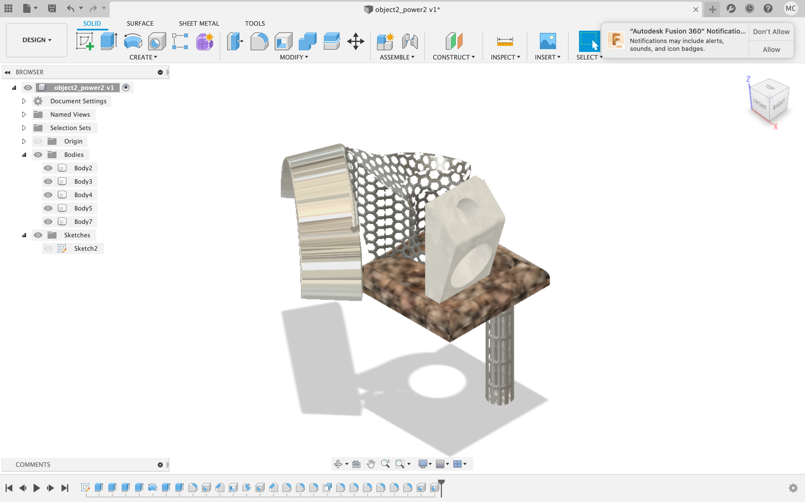
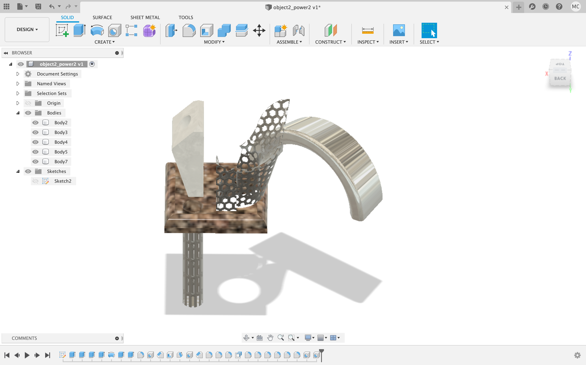
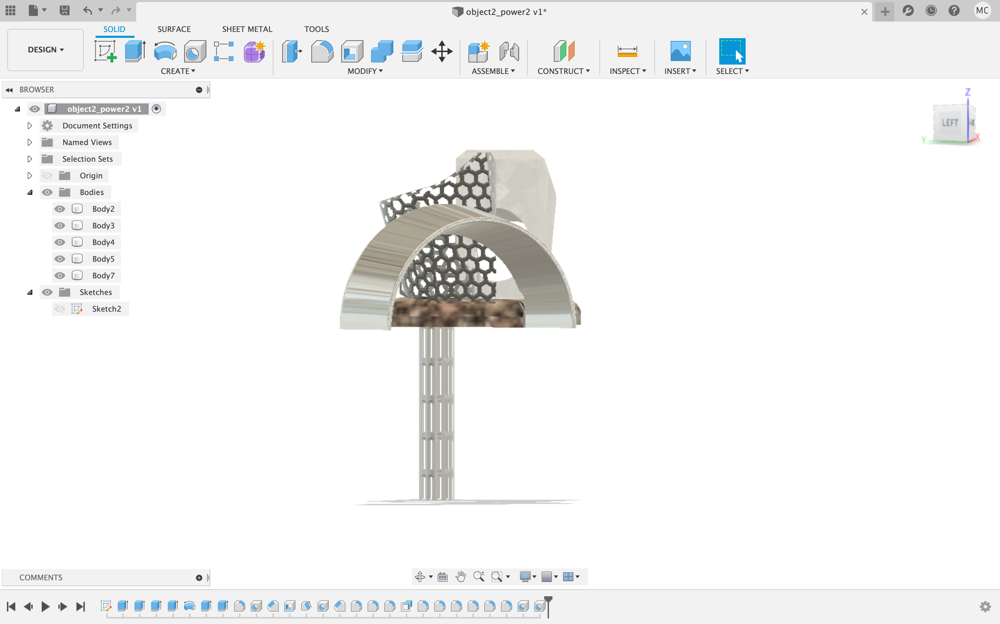
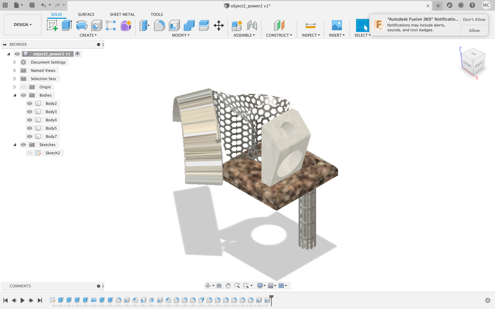
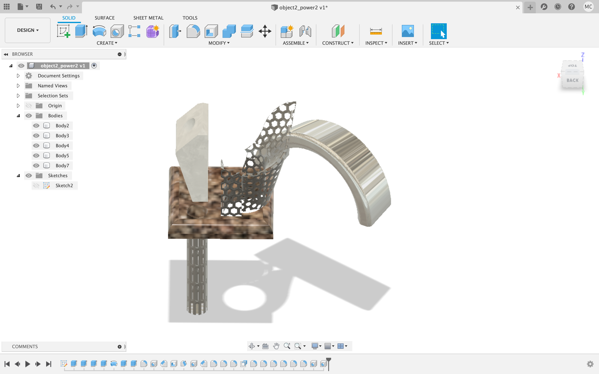
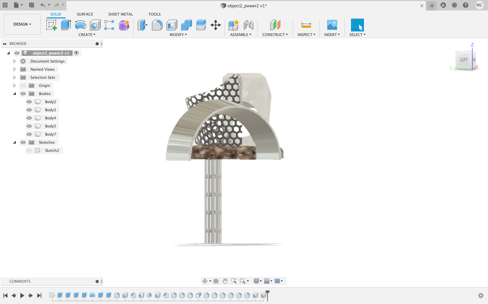
My design was inspired by my father's tea set. As a traditional Chinese, my father likes to drink Kongfu Tea very much, so he collects many different shapes of Sand-fired teapots. Among them, I like the sleek pot best. It is small and delicate and just right in your hand. Therefore, I designed my favorite Sand-fired pot and made a model of it.